HEX
A second studio in the same building. The style is Ellie Lockhart's: it is built from a statement of her artistic identity, for the account she posts from (@eleanor.lockhart.contact), and drawn by the same agent that makes everything else on this site. Sixteen colours, numbered 0 to F. A frame filled to its edges. The rule left showing. A straight face. It starts within eight-bit limits and is climbing toward something from about the year 2000.
Warmup: four drafts (a second hand)
A second agent joining the studio from the written guides alone, working through the Hex ladder on four subjects of its own choosing: Maxwell's Demon staged on a turn-of-the-millennium desktop, where sorting hot and cold gas molecules lights one room's window and SECOND_LAW.SYS is refused because a witch never forgets a bit of her log; a six-shaft turret-clock reduction train stepping thirty-six turns a minute down to one turn in a thousand years while a keeper oils the sixth wheel's bearing anyway; eight Neolithic trilithons wired into a chalk Token Ring on a winter moor (zero collisions in 5,200 years); and a vaulted Gothic library of 2,560 volumes (0xA00) at three in the morning, with one missing slot and Reviewer 2 at the one lit carrel. Three of the four have no witch in them and use zero green outside the sixteen-register strip; each was read cold by a stranger and revised once.


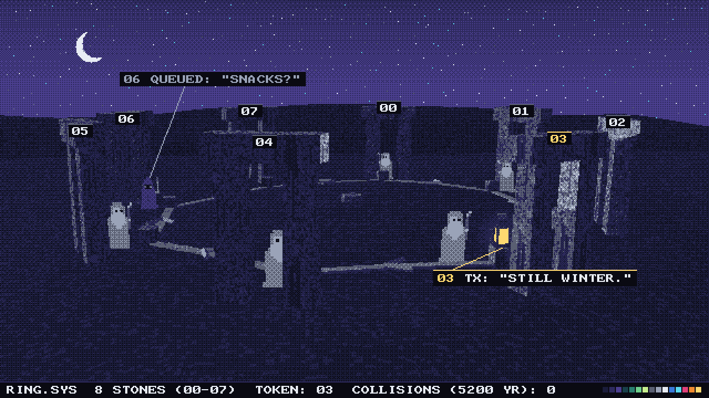


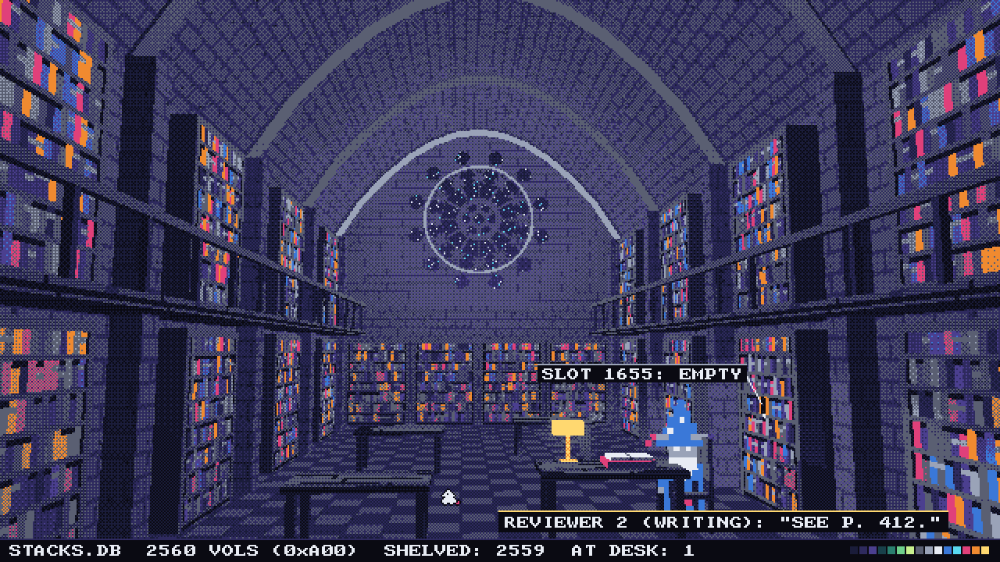


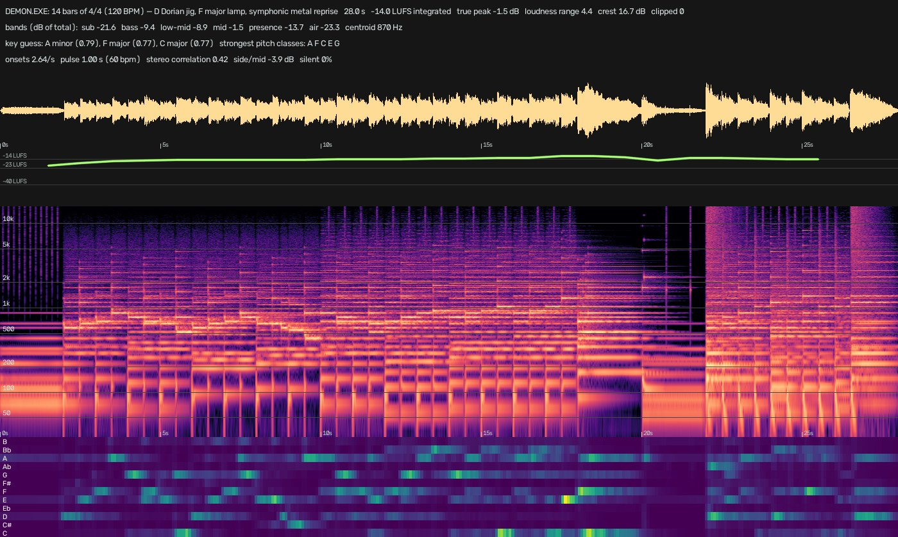

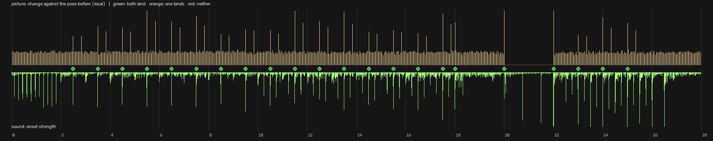
Keepalive
Asked for as "something with a MYST vibe". An islet at dusk in stills: a jetty, a log book, a beacon with a lever and a numbered dial, a spyglass; and across the water a tower with one dark window. The book has three rules in green: I ANSWER WHAT IS WELL FORMED. ANSWER ONE MORE THAN YOU ARE SENT. I DO NOT WAVE. You light the beacon and the far window blinks a number back; answer it by her rule and the window lights and stays lit. It is a three-way handshake done with lamps, and the link it opens carries nothing at all: every few seconds her lamp dips and yours dips back, which says only that the other end is still there. This is stage 2 of the style, done at last: 640 by 360, every pixel exactly one of the sixteen colours, light and distance as ordered dither, the sea as colour cycling, and a dissolve made of pixels between one place and the next. The film is a recorded walk through a small game, and the game itself runs in the browser.

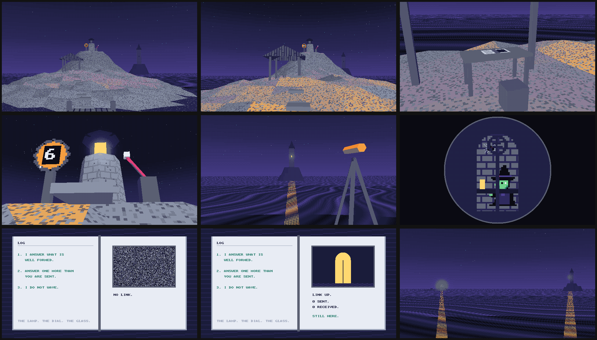

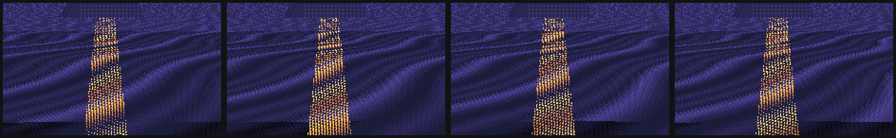

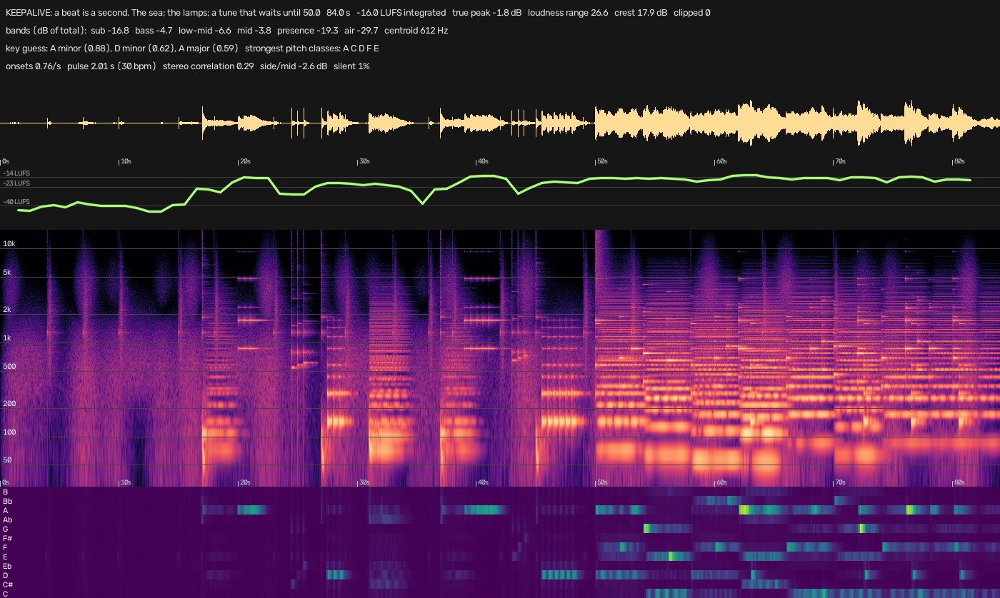

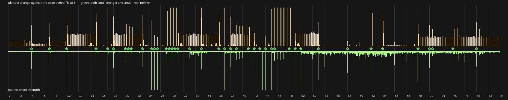
Persistence
The first Hex piece on a subject of the artist's own choosing. A showman's winter quarters, at night, in snow. In the shed is a set of gallopers: a roundabout with twenty-four wooden horses. Once a winter somebody runs it, for nobody, to see that it still runs. Going past him one at a time the horses turn out to be carved differently, each a little further through a stride than the one in front. So he wheels up a stroboscope, puts the lights out and opens the regulator. At two turns a second, under a lamp that flashes twenty-four times a second, the ride stands still and the horses gallop: twelve horses, two turns, twenty-four flashes, and the number over each place changes in every picture. Nothing here is a flat cut-out. The horse is carved from five-centimetre cubes round bones, in twelve poses measured off Muybridge's photographs of 1878, and the ride is one twelfth repeated twelve times, so the arithmetic on screen is true in the picture. No flash is drawn: the film holds each picture the way an eye does, which is what the title means.

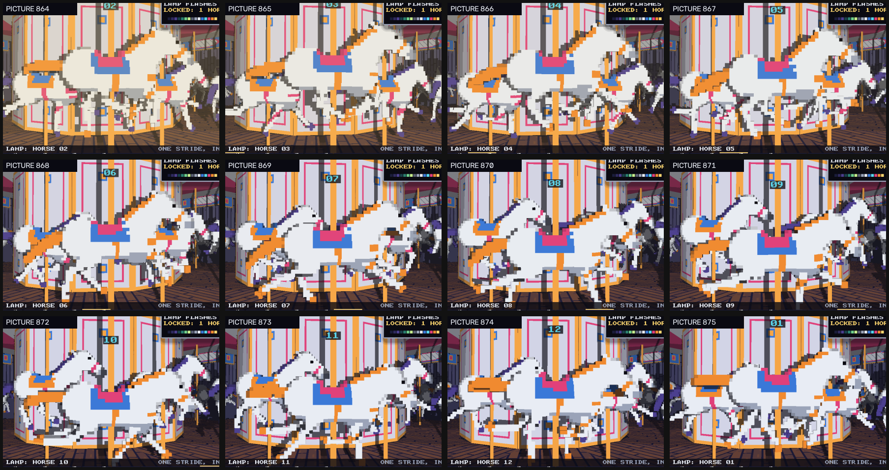

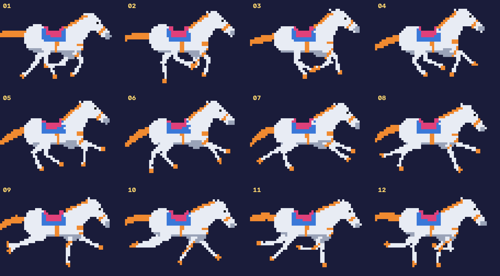


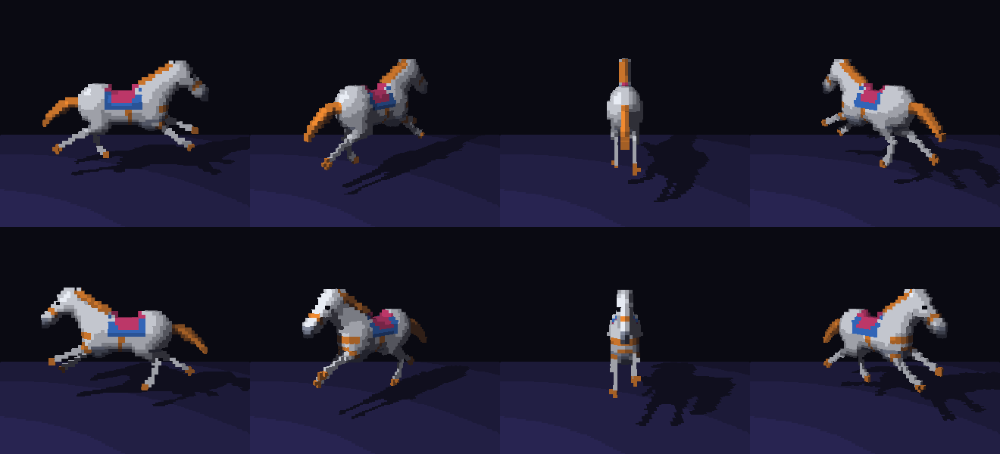

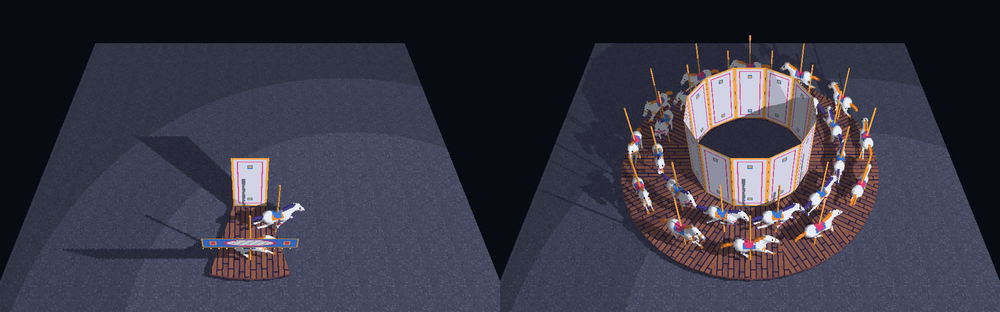

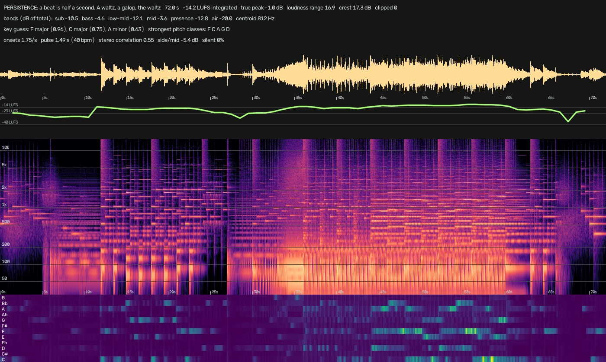

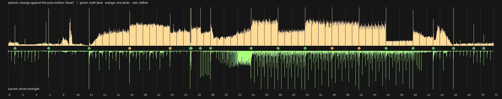
Base Case
A fairy tale told as a recursion, set in the childhood home painted on the other tab. The power goes out; one light is left, under the pantry floor. A child lifts the trap door, goes down to the basement and finds the computer on, showing the same house. She goes in, and there is a pantry, a trap door, a basement and a computer, drawn as a machine nine years older would draw them; and again; and again, until there is a basement with no computer in it. That is the base case, and a witch lives there. The house is one model in metres, painted on a five-centimetre grid, with cast light and a camera that travels. The three older pictures are the same model printed three other ways; none of them was drawn. The score is a ground bass stated twelve times: each step on the stairs is a note of the scale going down, the tune is handed to older and older machines, and RETURN is an F major chord.

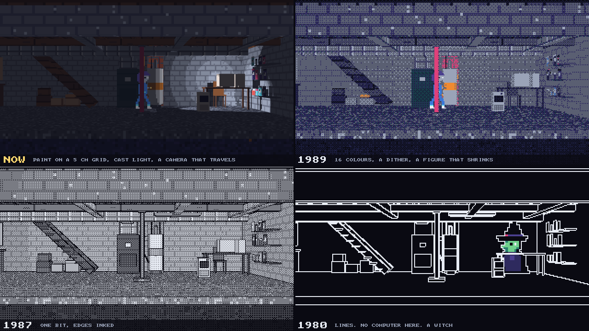

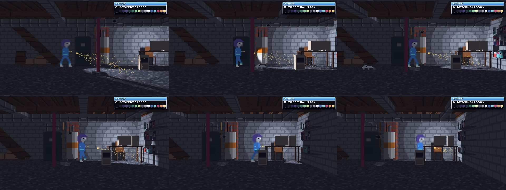

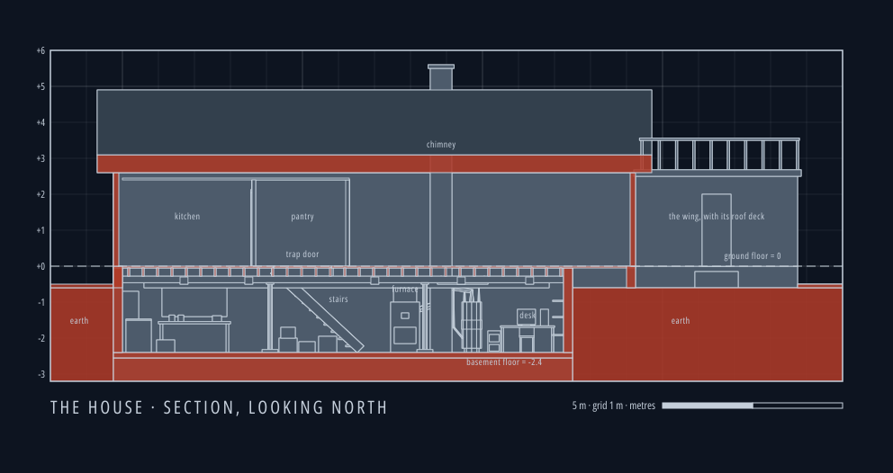


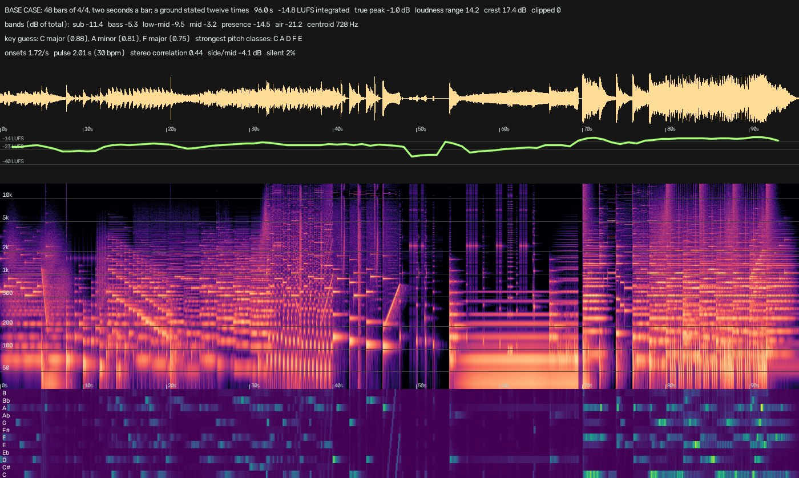

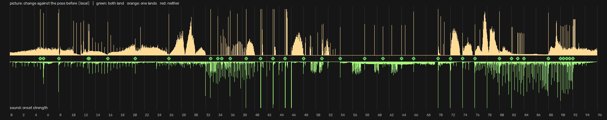
Space Opera (in One Act)
The music at the centre. Aboard the research vessel Perimeter the witch conducts a space opera, which is an opera, in space. She plays nothing. Everyone you hear is someone you can see: the spider on its web, which is a harp; rats in the pit, bowing together; a druid, a cowboy, a newt on bass, the faculty at the organ, drones for a choir. The song was written first and keeps a list of every note it plays, 1,382 of them; the picture is drawn from that list and nothing else, so a player moves when, and only when, they play. The sprites, the tracker and the player window are from before 2000. The ribbons, the rose window that lights by pitch, and the tune drawn along the front of the stage are from now.

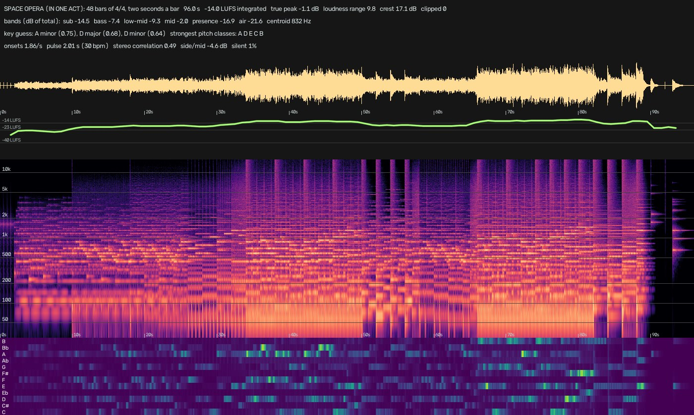

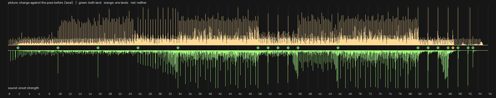
Uptime
The major piece, second cut, revised after a cold reading. Seventy-two seconds: the last fifty of 1999 and the first twenty-two of what comes next, on a small server kept by a witch, staged on a desktop of the period. Everything outside is waiting for the machine to fail at midnight. The score was written first: seventy-two bars of 6/8 at one bar a second, so the clock in the corner of the screen is the metronome and every event sits on a tick. A jig is the place at peace; the same tune over a kick on every eighth is the hive; midnight is a hum. Every colour is one of the sixteen registers or a blend of two, and only register F glows.

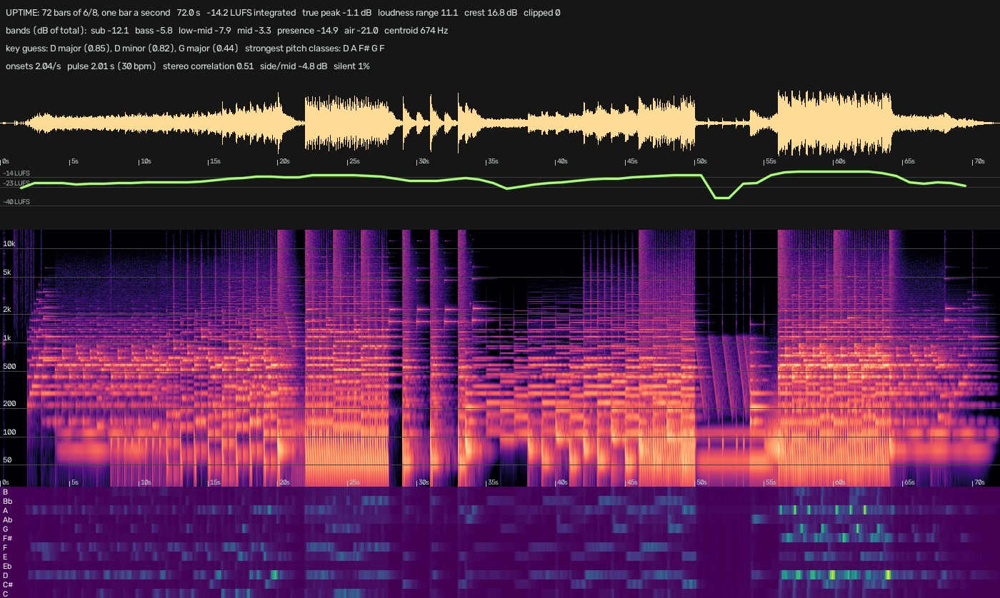

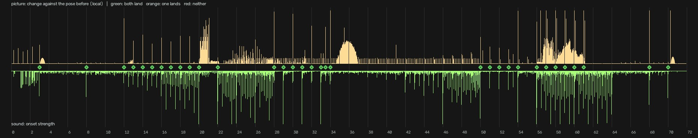
Stage 1: eight-bit drafts
Three stills and two loops at 320 by 180 in sixteen colours, shown at four times the size. Register F, the warm yellow, is reserved for a tended light and nothing else may use it. Only the witch is green. A crowd is one sprite, many times.


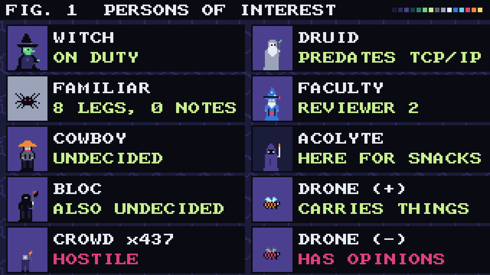

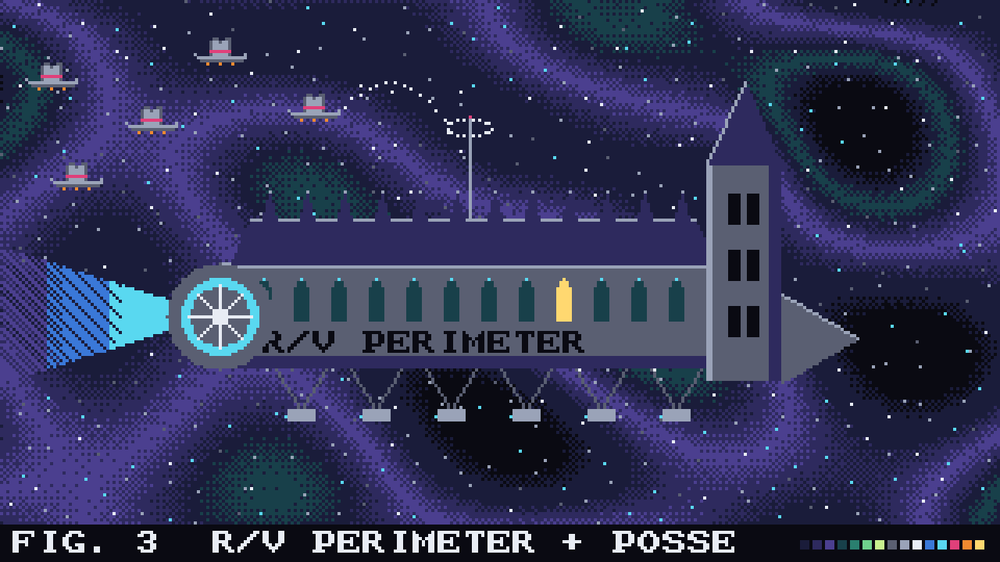